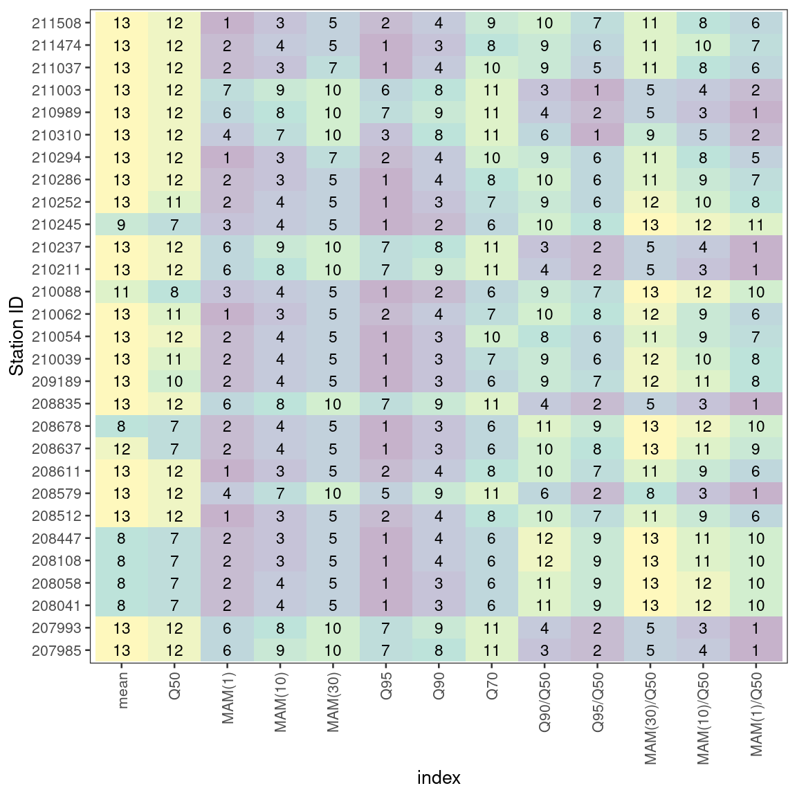

library(tidyverse)
library(hydroDrought)
regional## # A tibble: 29 x 44
## id discharge river station catchment altitude lon lat start
## <chr> <list> <chr> <chr> <dbl> <dbl> <dbl> <dbl> <date>
## 1 2100… <tibble … Rabn… Piring… 118. 298. 16.4 47.4 1971-01-01
## 2 2100… <tibble … Rabn… Manner… 224. 231. 16.5 47.4 1966-01-01
## 3 2100… <tibble … Stoob Oberpu… 149 237. 16.5 47.5 1966-01-01
## 4 2100… <tibble … Wulka Wulkap… 221. 162. 16.5 47.8 1966-01-01
## 5 2102… <tibble … Lafn… Dobers… 925. 234 16.1 47.0 1951-01-01
## 6 2102… <tibble … Pinka Woppen… 417. 242 16.4 47.2 1951-01-01
## 7 2102… <tibble … Tauc… Altsch… 89.2 316. 16.3 47.3 1966-01-01
## 8 2102… <tibble … Tauc… Hanner… 175. 247. 16.4 47.2 1951-01-01
## 9 2102… <tibble … Strem Güssing 316. 210. 16.3 47.1 1976-01-01
## 10 2102… <tibble … Strem Heilig… 400. 200. 16.4 47.0 1951-01-01
## # … with 19 more rows, and 35 more variables: end <date>, x <int>, y <int>,
## # Q95s <dbl>, Q95w <dbl>, Q95 <dbl>, A <dbl>, H0 <dbl>, Hx <dbl>, Hr <dbl>,
## # Hm <dbl>, Sm <dbl>, Ssl <dbl>, Smo <dbl>, Sst <dbl>, P <dbl>, Ps <dbl>,
## # Pw <dbl>, Gb <dbl>, Gq <dbl>, Gt <dbl>, Gf <dbl>, Gl <dbl>, Gc <dbl>,
## # Ggs <dbl>, Ggd <dbl>, Gso <int>, Lu <dbl>, La <dbl>, Lc <dbl>, Lg <dbl>,
## # Lf <dbl>, Lr <dbl>, Lwa <dbl>, D <dbl># functions for the percentiles we want to include
my_percentiles <- function(x)
{
as_tibble(as.list(lfquantile(x, exc.freq = c(0.95, 0.9, 0.7, 0.5))))
}
# functions for the mean annual minima
my_mams <- function(discharge, time, n = c(1, 10, 30))
{
names(n) <- paste0("MAM(", n, ")")
long <- map_df(n, ~map(list(value = mean_annual_minimum), exec,
n = .x,
discharge = discharge, time = time,
origin = "-09-01", na.rm = TRUE),
.id = "variable")
pivot_wider(long, names_from = variable, values_from = value)
}
indices <- regional %>%
select(station, data = discharge, area = catchment) %>%
filter(is.finite(area)) %>%
mutate(
# data = map2(data, area, ~mutate(.x, discharge = discharge * 1000 / .y)),
Q.mean = map_dbl(data, ~mean(.$discharge, na.rm = TRUE)),
quantiles = map(data, ~my_percentiles(.x$discharge)),
mams = map(data, ~my_mams(discharge = .x$discharge, time = .x$time))
) %>%
select(-data, -area) %>%
unnest(cols = c(quantiles, mams)) %>%
print()## # A tibble: 29 x 9
## station Q.mean Q95 Q90 Q70 Q50 `MAM(1)` `MAM(10)` `MAM(30)`
## <chr> <dbl> <dbl> <dbl> <dbl> <dbl> <dbl> <dbl> <dbl>
## 1 Piringsdorf 0.615 0.132 0.178 0.31 0.443 0.128 0.165 0.194
## 2 Mannersdorf 0.913 0.257 0.311 0.49 0.68 0.254 0.293 0.330
## 3 Oberpullendorf 0.613 0.14 0.179 0.305 0.429 0.119 0.152 0.193
## 4 Wulkaprodersdorf 0.548 0.15 0.191 0.299 0.414 0.170 0.198 0.235
## 5 Dobersdorf 6.47 2.44 2.83 3.86 4.91 2.29 2.63 3.03
## 6 Woppendorf 2.30 0.66 0.8 1.2 1.59 0.549 0.761 0.883
## 7 Altschlaining 0.409 0.124 0.159 0.255 0.348 0.146 0.164 0.188
## 8 Hannersdorf 0.692 0.18 0.236 0.39 0.52 0.194 0.234 0.279
## 9 Güssing 1.08 0.167 0.216 0.368 0.513 0.155 0.186 0.240
## 10 Heiligenbrunn 1.47 0.214 0.271 0.47 0.67 0.198 0.248 0.314
## # … with 19 more rows# derived indices
indices <- indices %>%
mutate(
`Q90/Q50` = Q90/Q50,
`Q95/Q50` = Q95/Q50,
`MAM(30)/Q50` = `MAM(30)`/Q50,
`MAM(10)/Q50` = `MAM(10)`/Q50,
`MAM(1)/Q50` = `MAM(1)`/Q50,
)# install_github("vqv/ggbiplot")
df <- indices %>%
column_to_rownames(var = "station")
pca <- prcomp(df, center = TRUE, scale. = TRUE)
# ggbiplot::ggbiplot(pca, labels=rownames(df))
biplot(pca)